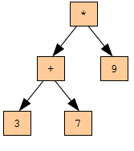

19. Деревья¶
19.1. Знакомьтесь: дерево¶
Как и связные списки, деревья состоят из узлов. Широко известно бинарное дерево, каждый узел которого содержит ссылки на два других узла (либо None). Эти ссылки указывают на левое и правое поддеревья. Как и узлы связных списков, узлы деревьев также содержат полезные данные. Следующая диаграмма представляет дерево:
Самый верхний узел дерева называется корнем. Ссылка на корень есть ссылка на все дерево. Развивая метафору с деревом, другие узлы называют ветвями, а конечные узлы, не имеющие ссылок на другие, — листьями.
(Возможно, вам кажется странным, что дерево нарисовано корнем вверх и листьями вниз? Но это не самое странное из того, что связано с деревьями.)
В отношении деревьев также используется метафора семьи. Поэтому узел, ссылающийся на другие, иногда называют родительским*, а узлы, на которые он ссылается — дочерними. Узлы, имеющие общего родителя, называют сестринскими.
И, наконец, говоря о деревьях, пользуются словами, обозначающими стороны и направления. Мы уже упомянули левое и правое поддеревья, но также имеются направления вверх (к родителям и корню) и вниз (к детям и листьям). А все узлы, находящиеся на одинаковым расстоянием от корня, составляют уровень дерева.
Подобно связным спискам, деревья также являются рекурсивными структурами, поскольку их определение рекурсивно. Дерево представляет собой:
- пустое дерево, представленное значением None, или
- узел, содержащий данные и ссылки на деревья.
В случае бинарного дерева, узел содержит две ссылки.
19.2. Построение деревьев¶
Построение дерева похоже на построение связного списка. Каждый вызов конструктора создает один узел.
class Tree:
def __init__(self, cargo, left=None, right=None):
self.cargo = cargo
self.left = left
self.right = right
def __str__(self):
return str(self.cargo)
Параметр cargo, представляющий данные, может быть любого типа, а параметры left и right должны быть узлами деревьев. left и right опциональны и имеют значения по умолчанию None.
Чтобы вывести на печать узел, будем выводить его данные, cargo.
Один из способов построить дерево — снизу вверх. Создадим вначале дочерние узлы:
left = Tree(2)
right = Tree(3)
Затем создадим родительский узел и свяжем его с дочерними:
tree = Tree(1, left, right);
Можно записать этот код более компактно:
>>> tree = Tree(1, Tree(2), Tree(3))
В обоих случаях, мы получим дерево, изображенное на рисунке в начале главы.
19.3. Обход деревьев¶
Всякий раз, когда вы встречаетесь с новой структурой данных, первый вопрос, заданный вами, должен быть: как перебрать все элементы этой структуры? Наиболее естественный способ обойти дерево, посетив все его узлы, — рекурсивный. Например, если узлы дерева содержат целые числа в качестве данных, то следующая функция подсчитывает их сумму:
def total(tree):
if tree == None: return 0
return total(tree.left) + total(tree.right) + tree.cargo
Базовый случай здесь пустое дерево, не содержащее данных; для него возвращается 0. На каждом шаге рекурсии делаются два вызова функции total для подсчета суммы дочерних деревьев. К сумме результатов рекурсивных вызовов добавляются родительские данные, и возвращается сумма.
19.4. Деревья выражений¶
Деревья естественным образом представляют структуру выражений. В отличие от других способов представления, дерево описывает порядок вычислений однозначно. Например, инфиксное выражение 1 + 2 * 3 неоднозначно, если не принять во внимание, что умножение является более приоритетной операцией, чем сложение.
Дерево на следующем рисунке представляет это выражение:
Узлами дерева, представляющего выражение, могут быть операнды, например, 1 и 2, и операторы, +, * и другие. Операнды будут листьями, а узлы-операторы будут ссылаться на узлы-операнды. (Все используемые нами операторы являются бинарными, то есть, имеют ровно два операнда.)
Можно построить это дерево таким образом:
>>> tree = Tree('+', Tree(1), Tree('*', Tree(2), Tree(3)))
При взгляде на это дерево не возникает вопроса о порядке операций. Вначале выполняется умножение для того, чтобы вычислить второй операнд для сложения, и затем выполняется сложение.
Деревья выражений имеют многочисленные применения. Далее в этой главе деревья используются для того, чтобы переводить выражения в постфиксную, префиксную или инфиксную запись. Похожие деревья используются внутри компиляторов для синтаксического анализа, оптимизации и трансляции программ.
19.5. Обход дерева выражения¶
Мы можем обойти дерево выражения и вывести его на печать таким образом:
def print_tree(tree):
if tree == None: return
print tree.cargo,
print_tree(tree.left)
print_tree(tree.right)
Как видите, для вывода дерева на печать мы вначале выводим корень, затем левое поддерево, затем правое. Такой способ обхода дерева называется предупорядоченным обходом, или обходом в прямом порядке, потому, что родительский узел посещается перед посещением дочерних узлов. Выведем наше дерево на печать:
>>> tree = Tree('+', Tree(1), Tree('*', Tree(2), Tree(3)))
>>> print_tree(tree)
+ 1 * 2 3
Такая форма записи выражения отличается и от постфиксной, и от инфиксной. Запись, в которой операторы предшествуют операндам, называется префиксной.
Вы, наверное, уже заподозрили, что при обходе дерева другим способом получится другая запись выражения. Так оно и есть. Например, будем выводить на печать поддеревья прежде их родителя:
def print_tree_postorder(tree):
if tree == None: return
print_tree_postorder(tree.left)
print_tree_postorder(tree.right)
print tree.cargo,
Результат, 1 2 3 * +, является постфиксной записью! Такой порядок обхода дерева называется поступорядоченным, или обходом в обратном порядке. В самом деле, вначале выводятся листья, в к конце — корень.
Наконец, для выполнения симметричного обхода нужно вначале вывести левое поддерево, затем его родителя, и затем правое дерево:
def print_tree_inorder(tree):
if tree == None: return
print_tree_inorder(tree.left)
print tree.cargo,
print_tree_inorder(tree.right)
Получам инфиксную запись выражения: 1 + 2 * 3.
Если быть до конца честными, то нужно сказать, что мы допустили существенное упрощение. Иногда для записи инфиксных выражений нужно использовать скобки, чтобы сохранить порядок выполнения операций. Поэтому симметричный обход не всегда достаточен для генерации полноценного инфиксного выражения.
Тем не менее, после некоторой доработки, дерево выражений и его обход разными способами предоставляют средства для перевода выражений из одной формы в другую.
Если в процессе симметричного обхода дерева мы будем следить за тем, на каком уровне дерева находимся, мы сможем получить графическое представление дерева:
def print_tree_indented(tree, level=0):
if tree == None: return
print_tree_indented(tree.right, level+1)
print ' ' * level + str(tree.cargo)
print_tree_indented(tree.left, level+1)
Параметр level (англ.: уровень) сообщает нам, на каком уровне дерева мы находимся. Изначально он равен 0. Каждый раз, когда мы делаем рекурсивный вызов, мы передаем level+1 в качестве параметра, поскольку уровень дочернего узла всегда на 1 больше, чем уровень родительского. Данные узла при выводе на печать сдвигаются вправо пропорционально уровню. Получаем следующее:
>>> print_tree_indented(tree)
3
*
2
+
1
Если взглянуть на полученный вывод сбоку, можно увидеть подобие дерева, изображенного на рисунке выше.
19.6. Построение дерева выражения¶
В этом разделе мы выполним разбор инфиксных выражений и построим соответствующие им деревья. Например, выражение (3 + 7) * 9 даст нам следующее дерево:
Мы упростили рисунок, опустив имена атрибутов.
Синтаксический анализатор, или парсер, который мы напишем, будет работать с выражениями, включающими числа, скобки и операторы + и *. Будем исходить из предположения, что исходное выражение уже разбито на лексемы, которые помещены в список Python (получите этот список сами в качестве упражнения). Список лексем для выражения (3 + 7) * 9 следующий:
['(', 3, '+', 7, ')', '*', 9, 'end']
Лексема end играет роль ограничителя списка, предотвращая выход парсера за его границу.
Первая функция, которую мы напишем, это функция get_token, принимающая в качестве параметров список лексем и ожидаемую лексему. Функция сравнивает ожидаемую лексему с первой в списке. Если они равны, лексема удаляется из списка, и функция возвращает True. В противном случае возвращается False:
def get_token(token_list, expected):
if token_list[0] == expected:
del token_list[0]
return True
else:
return False
Так как переменная token_list ссылается на изменяемый объект, сделанные в функции изменения доступны через любую переменную, ссылающуюся на тот же объект.
Следующая функция, get_number, работает с операндами. Если следующая лексема в списке token_list является числом, то get_number удаляет ее из списка и возвращает узел, содержащий это число. В противном случае возвращается None.
def get_number(token_list):
x = token_list[0]
if type(x) != type(0): return None
del token_list[0]
return Tree(x, None, None)
Прежде чем идти дальше, стоит протестировать функцию get_number. Присвоим список чисел переменной token_list, вызовем get_number и выведем на печать результат, а также то, что осталось в token_list:
>>> token_list = [9, 11, 'end']
>>> x = get_number(token_list)
>>> print_tree_postorder(x)
9
>>> print token_list
[11, 'end']
Следующая необходимая нам функция, это get_product (англ.: получить произведение), которая строит дерево для произведения. Простое произведение имеет два числа в качестве операндов, например, 3 * 7.
Вот версия get_product для простых произведений.
def get_product(token_list):
a = get_number(token_list)
if get_token(token_list, '*'):
b = get_number(token_list)
return Tree ('*', a, b)
else:
return a
Предполагая, что get_number возвращает узел с первым операндом, присваиваем его переменной a. Если следующая лексема *, то получам второй операнд и строим дерево выражения с помощью a, b и оператора произведения.
Если же следующая лексема не *, то возвращаем узел-лист первого операнда, a. Приведем два примера:
>>> token_list = [9, '*', 11, 'end']
>>> tree = get_product(token_list)
>>> print_tree_postorder(tree)
9 11 *
>>> token_list = [9, '+', 11, 'end']
>>> tree = get_product(token_list)
>>> print_tree_postorder(tree)
9
Как видно из второго примера, единственный операнд рассматривается как своего рода произведение. Хотя это выглядит необычно, такой прием оказывается полезным.
А теперь возьмем более сложное произведение, например, 3 * 5 * 13. Это выражение можно рассматривать как произведение произведений, а именно: 3 * (5 * 13). Получаем следующее дерево:
Немного доработав get_product, мы сможем иметь дело с произведениями произвольной длины:
def get_product(token_list):
a = get_number(token_list)
if get_token(token_list, '*'):
b = get_product(token_list) # this line changed
return Tree('*', a, b)
else:
return a
Другими словами, произведение может быть либо деревом с единственным узлом, либо деревом с корнем *, дочерним узлом-операндом слева и дочерним узлом-произведением справа. Рекурсивные определения, подобные этому, уже должны казаться вам привычными.
Протестируем новую версию функции со сложным произведением:
>>> token_list = [2, '*', 3, '*', 5 , '*', 7, 'end']
>>> tree = get_product(token_list)
>>> print_tree_postorder(tree)
2 3 5 7 * * *
А теперь реализуем синтаксический разбор сумм. И снова воспользуемся несколько неожиданным определением. Сумма для нас либо дерево с корнем +, дочерним узлом-произведением слева и дочерним узлом-суммой справа, либо дерево с единственным узлом-произведением.
Если вы приглядитесь к этому определению повнимательнее, то обнаружите замечательное свойство: мы можем представить любое выражение без скобок как сумму произведений. На этом свойстве основывается наш алгоритм синтаксического разбора.
Функция get_sum пробует построить дерево с дочерним узлом-произведением слева и дочерним узлом-суммой справа. Но если функция не обнаруживает +, она просто возвращает произведение.
def get_sum(token_list):
a = get_product(token_list)
if get_token(token_list, '+'):
b = get_sum(token_list)
return Tree('+', a, b)
else:
return a
Протестируем функцию с выражением 9 * 11 + 5 * 7:
>>> token_list = [9, '*', 11, '+', 5, '*', 7, 'end']
>>> tree = get_sum(token_list)
>>> print_tree_postorder(tree)
9 11 * 5 7 * +
Мы почти закончили, осталось только научиться работать со скобками. В любом месте выражения, где может быть число, может быть также сумма, заключенная в скобки. Изменим get_number так, чтобы обрабатывать подвыражения:
def get_number(token_list):
if get_token(token_list, '('):
x = get_sum(token_list) # get the subexpression
get_token(token_list, ')') # remove the closing parenthesis
return x
else:
x = token_list[0]
if type(x) != type(0): return None
token_list[0:1] = []
return Tree(x, None, None)
Протестируем этот код с выражением 9 * (11 + 5) * 7:
>>> token_list = [9, '*', '(', 11, '+', 5, ')', '*', 7, 'end']
>>> tree = get_sum(token_list)
>>> print_tree_postorder(tree)
9 11 5 + 7 * *
Наш парсер обработал скобки корректно, сложение выполняется перед умножением.
Финальной версии get_number было бы неплохо дать другое имя, лучше описывающее ее функциональность.
19.7. Обработка ошибок¶
До сих пор при разработке парсера мы полагали, что на вход поступают корректные выражения. Например, когда мы достигаем конца подвыражения, мы полагаем, что следующей лексемой будет закрывающая скобка. Однако, если это не так, программа должна справиться с ситуацией.
def get_number(token_list):
if get_token(token_list, '('):
x = get_sum(token_list)
if not get_token(token_list, ')'):
raise 'BadExpressionError', 'missing parenthesis'
return x
else:
# the rest of the function omitted
Предложение raise создает исключение; в данном случае мы создаем новый вид исключения с именем BadExpressionError. Если функция, вызвавшая get_number, или другая функция в текущем стеке вызовов обрабатывает это исключение, то программа сможет продолжить работу. Иначе Python выведет сообщение об ошибке и завершится.
19.8. Дерево животных¶
В этом разделе мы разработаем небольшую программу, которая использует дерево для построения базы знаний.
Программа, взаимодействуя с пользователем, создает дерево вопросов и названий животных. Вот пример выполнения этой программы:
Are you thinking of an animal? y
Is it a bird? n
What is the animal's name? dog
What question would distinguish a dog from a bird? Can it fly
If the animal were dog the answer would be? n
Are you thinking of an animal? y
Can it fly? n
Is it a dog? n
What is the animal's name? cat
What question would distinguish a cat from a dog? Does it bark
If the animal were cat the answer would be? n
Are you thinking of an animal? y
Can it fly? n
Does it bark? y
Is it a dog? y
I rule!
Are you thinking of an animal? n
Вот дерево, которое строит этот диалог:

Каждый опрос программа начинает с корня дерева, и задает содержащийся в нем вопрос. В зависимости от ответа, программа переходит к левому или правому дочернему узлу и задает вопрос, содержащийся в этом узле. И так далее, пока не будет достигнут конечный узел-лист. Тогда программа высказывает догадку. Если эта догадка не верна, программа просит пользователя ввести название нового животного и вопрос, который позволит отличить это животное от животного, предложенного программой. Затем к дереву добавляется новый узел с вопросом и названием животного, введенными пользователем.
Вот код программы:
def yes(ques):
ans = raw_input(ques).lower()
return ans[0] == 'y'
def animal():
# start with a singleton
root = Tree("bird")
# loop until the user quits
while True:
print
if not yes("Are you thinking of an animal? "): break
# walk the tree
tree = root
while tree.left != None:
prompt = tree.cargo + "? "
if yes(prompt):
tree = tree.right
else:
tree = tree.left
# make a guess
guess = tree.cargo
prompt = "Is it a " + guess + "? "
if yes(prompt):
print "I rule!"
continue
# get new information
prompt = "What is the animal's name? "
animal = raw_input(prompt)
prompt = "What question would distinguish a %s from a %s? "
question = raw_input(prompt % (animal, guess))
# add new information to the tree
tree.cargo = question
prompt = "If the animal were %s the answer would be? "
if yes(prompt % animal):
tree.left = Tree(guess)
tree.right = Tree(animal)
else:
tree.left = Tree(animal)
tree.right = Tree(guess)
Вспомогательная функция yes печатает приглашение и принимает ввод пользователя. Если ответ пользователя начинается с y или Y, то функция возвращает True.
Условием внешнего цикла в функции animal является True. Это значит, что цикл будет продолжаться до тех пор, пока не выполнится предложение break (в случае, когда пользователь не задумал животное).
Во внутреннем цикле while происходит перемещение по дереву от корня к листьям, управляемое ответами пользователя.
Когда к дереву добавляется новый узел, текущий узел получает новый вопрос и два дочерних узла: один с новым животным и один с оригинальным (первоначальным) вопросом.
Недостаток этой программы в том, что когда она завершается, она забывает обо всем, чему вы ее научили! Решите эту проблему в качестве упражнения.
19.9. Глоссарий¶
- бинарный оператор
- Оператор, требующий два операнда.
- бинарное дерево
- Дерево, каждый узел которого ссылается на ноль, один или два дочерних узла.
- дочерний узел дерева
- Узел, на который ссылается родительский узел.
- корень дерева
- Узел дерева, не имеющий родительского.
- лист дерева
- Узел дерева, не имеющий дочерних узлов.
- подвыражение
- Выражение в скобках, рассматриваемое как операнд объемлющего выражения.
- предупорядоченный обход дерева
- Способ обхода дерева, при котором каждый узел посещается перед посещением его дочерних узлов.
- префиксная запись
- Способ записи математического выражения, при котором оператор предшествует операндам.
- поступорядоченный обход дерева
- Способ обхода дерева, при котором каждый узел посещается после посещения его дочерних узлов.
- родительский узел дерева
- Узел, ссылающийся на другие (дочерние) узлы.
- сестринские узлы дерева
- Узлы, имеющие общий родительский узел.
- симметричный обход дерева
- Способ обхода дерева, при котором для каждого узла вначале посещается левый дочерний узел, затем сам этот узел, затем правый дочерний узел.
- уровень дерева
- Множество узлов, равноотстоящих от корня.
19.10. Упражнения¶
- Измените функцию print_tree_inorder так, чтобы она ставила скобки вокруг каждого оператора с парой операндов. Работает ли она корректно и однозначно? Всегда ли необходимы скобки?
- Напишите лексический анализатор, то есть, функцию, которая принимает строку с выражением и возвращает список лексем.
- Найдите еще места в функциях, работающих с деревом выражения, где могут возникнуть ошибки, и добавьте соответствующие предложения raise. Протестируйте ваш код с некорректными выражениями.
- Придумайте различные способы сохранения дерева животных в файл. Реализуйте тот, который считаете самым простым.